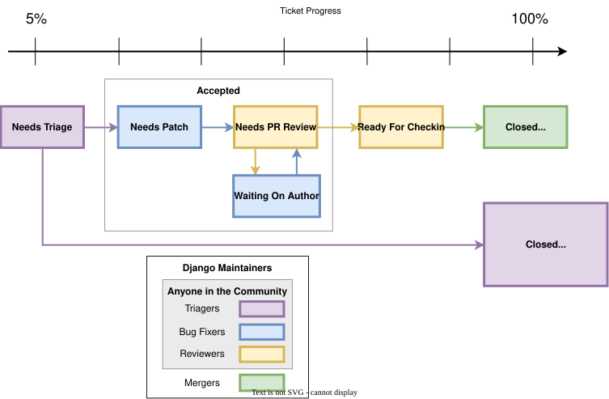

Django uses Trac for managing the work on the code base. Trac is a community-tended garden of the bugs people have found and the features Django has decided to add. As in any garden, sometimes there are weeds to be pulled and sometimes there are flowers and vegetables that need picking. We need your help to sort out one from the other, and in the end, we all benefit together.
Like all gardens, we can aspire to perfection, but in reality there’s no such thing. Even in the most pristine garden there are still snails and insects. In a community garden there are also helpful people who – with the best of intentions – fertilize the weeds and poison the roses. It’s the job of the community as a whole to self-manage, keep the problems to a minimum, and educate those coming into the community so that they can become valuable contributing members.
Similarly, while we aim for Trac to be a perfect representation of the state of Django’s progress, we acknowledge that this will not happen. By distributing the load of Trac maintenance to the community, we accept that there will be mistakes. Trac is “mostly accurate”, and we give allowances for the fact that sometimes it will be wrong. That’s okay. We’re perfectionists with deadlines.
We rely on the community to keep participating, keep tickets as accurate as possible, and raise issues for discussion on the Django Forum when there is confusion or disagreement.
Django is a community project, and every contribution helps. We can’t do this without you!
Unfortunately, not all reports in the ticket tracker provide all the required details. A number of tickets have proposed solutions, but those don’t necessarily meet all the requirements adhering to the guidelines for contributing.
One way to help out is to triage tickets that have been created by other users.
Most of the workflow is based around the concept of a ticket’s triage stages. Each stage describes where in its lifetime a given ticket is at any time. Along with a handful of flags, this attribute easily tells us what and who each ticket is waiting on.
Since a picture is worth a thousand words, let’s start there:

We have four roles in this diagram. Maintainers (also known as Fellows) usually take part in all of them, but anyone in the Django community can participate in any role except merger. The merger role is granted by a vote of the Steering Council.
Triagers: anyone can take on this role by checking whether a ticket describes a real issue and keeping the tracker organized.
Bug fixers: anyone can contribute by opening a pull request and working on a solution for a ticket.
Reviewers: anyone can review pull requests and suggest improvements.
Mergers: people with commit access who make the final decision to merge a change.
Our Trac system is intentionally open to the public, and anyone can help by working on tickets. Django is a community project, and we encourage triage and collaboration by the community. This could be you!
For example, here’s the typical lifecycle of a ticket:
Alice creates a ticket and opens an incomplete pull request (missing tests, incorrect implementation).
Bob reviews the pull request, marks the ticket as “Accepted”, sets the flags “needs tests” and “patch needs improvement”, and leaves a comment explaining how Alice can improve the patch. This puts the ticket automatically into the “waiting on author” queue within the “accepted” stage.
Alice updates the pull request, adding tests (but not yet fixing the implementation), and removes the two flags. The ticket moves into the “needs PR review” queue.
Charlie reviews the pull request, sets the “patch needs improvement” flag again, and leaves another comment suggesting changes to the implementation. The ticket moves back to the “waiting on author” queue.
Alice updates the pull request again, this time fixing the implementation, and removes the “patch needs improvement” flag. The ticket moves once more into the “needs PR review” queue.
Daisy reviews the pull request and marks the ticket as “Ready for checkin”.
Jacob, a merger, reviews and merges the pull request.
Some tickets move through these steps quickly, while others take more time and discussion. Each contribution helps Django improve.
Below we describe in more detail the various stages that a ticket may flow through during its lifetime.
The ticket has not been reviewed by anyone who felt qualified to make a judgment about whether the ticket contained a valid issue or ought to be closed for any reasons. Unreviewed tickets appear in the “triage” queue.
Unreviewed tickets may receive additional refinement before being accepted. Unless you are both the author of the ticket and intending to submit a patch, unreviewed tickets should not be claimed.
The absolute meaning of “accepted” is that the issue described in the ticket is valid and actionable. It is broken out into three queues:
Needs Patch (Accepted + No Flags)
The ticket is valid, but no one has submitted a patch for it yet. Often this means you could safely start writing a fix for it. This is generally more true for the case of accepted bugs than accepted features. A ticket for a bug that has been accepted means that the issue has been verified by at least one triager as a legitimate bug - and should probably be fixed if possible.
For new features, accepted tickets should only exist after the idea has gone through the appropriate process for suggesting new features and received community and Steering Council approval, or been accepted in a DEP.
Needs PR Review (Accepted + Has Patch)
The ticket is waiting for people to review the supplied solution. This means downloading the patch and trying it out, verifying that it contains tests and docs, running the test suite with the included patch, and leaving feedback on the ticket.
Waiting On Author (Accepted + Has Patch + Needs fixes)
This means the ticket has been reviewed, and has been found to need further work. “Needs tests” and “Needs documentation” are self-explanatory. “Patch needs improvement” will generally be accompanied by a comment on the ticket explaining what is needed to improve the code.
The ticket was reviewed by any member of the community other than the person who supplied the patch and found to meet all the requirements for a commit-ready contribution. A merger now needs to give a final review prior to being committed.
There are a lot of pull requests. It can take a while for your patch to get reviewed. See the contributing code FAQ for some ideas here.
This stage isn’t shown on the diagram. It’s used sparingly to keep track of long-term changes.
These tickets are uncommon and overall less useful since they don’t describe concrete actionable issues.
A number of flags, appearing as checkboxes in Trac, can be set on a ticket:
This means the ticket has an associated solution. These will be reviewed to ensure they adhere to the documented guidelines.
The following three fields (Needs documentation, Needs tests, Patch needs improvement) apply only if a patch has been supplied.
This flag is used for tickets with patches that need associated documentation. Complete documentation of features is a prerequisite before we can check them into the codebase.
This flags the patch as needing associated unit tests. Again, this is a required part of a valid contribution.
This flag means that although the ticket has a solution, it’s not quite ready for checkin. This could mean the patch no longer applies cleanly, there is a flaw in the implementation, or that the code doesn’t meet our standards.
Tickets that would require small, easy, changes.
Tickets should be categorized by type between:
For adding something new.
For when an existing thing is broken or not behaving as expected.
For when nothing is broken but something could be made cleaner, better, faster, stronger.
Tickets should be classified into components indicating which area of the Django codebase they belong to. This makes tickets better organized and easier to find.
The severity attribute is used to identify blockers, that is, issues that should get fixed before releasing the next version of Django. Typically those issues are bugs causing regressions from earlier versions or potentially causing severe data losses. This attribute is quite rarely used and the vast majority of tickets have a severity of “Normal”.
The version attribute indicates the earliest version in which the bug was reproduced. During triage, this field can be updated, but there is no need to make further updates when that version goes out of support. The field should not be reset to “dev” to show the issue still exists: instead, the tested commit hash can be noted in a comment.
This flag is used for tickets that relate to User Interface and User Experiences questions. For example, this flag would be appropriate for user-facing features in forms or the admin interface.
You may add your username or email address to this field to be notified when new contributions are made to the ticket.
With this field you may label a ticket with multiple keywords. This can be useful, for example, to group several tickets on the same theme. Keywords can either be comma or space separated. Keyword search finds the keyword string anywhere in the keywords. For example, clicking on a ticket with the keyword “form” will yield similar tickets tagged with keywords containing strings such as “formset”, “modelformset”, and “ManagementForm”.
When a ticket has completed its useful lifecycle, it’s time for it to be closed. Closing a ticket is a big responsibility, though. You have to be sure that the issue is really resolved, and you need to keep in mind that the reporter of the ticket may not be happy to have their ticket closed (unless it’s fixed!). If you’re not certain about closing a ticket, leave a comment with your thoughts instead.
If you do close a ticket, you should always make sure of the following:
Be certain that the issue is resolved.
Leave a comment explaining the decision to close the ticket.
If there is a way they can improve the ticket to reopen it, let them know.
If the ticket is a duplicate, reference the original ticket. Also cross-reference the closed ticket by leaving a comment in the original one – this allows to access more related information about the reported bug or requested feature.
Be polite. No one likes having their ticket closed. It can be frustrating or even discouraging. The best way to avoid turning people off from contributing to Django is to be polite and friendly and to offer suggestions for how they could improve this ticket and other tickets in the future.
A ticket can be resolved in a number of ways:
Used once a patch has been rolled into Django and the issue is fixed.
Used if the ticket is found to be incorrect. This means that the issue in the ticket is actually the result of a user error, or describes a problem with something other than Django, or isn’t a bug report or feature request at all (for example, some new users submit support queries as tickets).
Used when someone decides that the request isn’t appropriate for consideration in Django. Sometimes a ticket is closed as “wontfix” with a request for the reporter to start a discussion on the Django Forum if they feel differently from the rationale provided by the person who closed the ticket. Other times, a discussion precedes the decision to close a ticket. Always use the forum to get a consensus before reopening tickets closed as “wontfix”.
Used when the ticket merits a new feature, which will need to get community input and support. See the process for suggesting new features.
Used when another ticket covers the same issue. By closing duplicate tickets, we keep all the discussion in one place, which helps everyone.
Used when the ticket doesn’t contain enough detail to replicate the original bug.
Used when the ticket does not contain enough information to replicate the reported issue but is potentially still valid. The ticket should be reopened when more information is supplied.
If you believe that the ticket was closed in error – because you’re still having the issue, or it’s popped up somewhere else, or the triagers have made a mistake – please reopen the ticket and provide further information. Again, please do not reopen tickets that have been marked as “wontfix” or “needsnewfeatureprocess”. For “wontfix” tickets, bring the issue to the Django Forum instead. For “needsnewfeatureprocess” tickets, propose the feature through the new features process.
The development process is primarily driven by community members. Really, ANYONE can help.
To get involved, start by creating an account on Trac. If you have an account but have forgotten your password, you can reset it using the password reset page.
Then, you can help out by:
Closing “Unreviewed” tickets as “invalid”, “worksforme”, “duplicate”, “wontfix”, or “needsnewfeatureprocess”.
Closing “Unreviewed” tickets as “needsinfo” when the description is too sparse to be actionable.
Correcting the “Needs tests”, “Needs documentation”, or “Has patch” flags for tickets where they are incorrectly set.
Setting the “Easy pickings” flag for tickets that are small and relatively straightforward.
Set the type of tickets that are still uncategorized.
Checking that old tickets are still valid. If a ticket hasn’t seen any activity in a long time, it’s possible that the problem has been fixed but the ticket hasn’t yet been closed.
Identifying trends and themes in the tickets. If there are a lot of bug reports about a particular part of Django, it may indicate we should consider refactoring that part of the code. If a trend is emerging, you should raise it for discussion (referencing the relevant tickets) on the Django Forum.
Verify if solutions submitted by others are correct. If they are correct and also contain appropriate documentation and tests then move them to the “Ready for Checkin” stage. If they are not correct then leave a comment to explain why and set the corresponding flags (“Patch needs improvement”, “Needs tests” etc.).
Note
The Reports page contains links to many useful Trac queries, including several that are useful for triaging tickets and reviewing proposals as suggested above.
You can also find more Advice for new contributors.
However, we do ask the following of all general community members working in the ticket database:
Please don’t promote your own tickets to “Accepted”. Another community member should review the report and set this stage after reproducing and confirming the issue.
Please don’t promote your own tickets to “Ready for checkin”. You may mark other people’s tickets that you’ve reviewed as “Ready for checkin”, but you should get at minimum one other community member to review a patch that you submit.
Please don’t reverse a decision without posting a message to the Django Forum to find consensus.
If you’re unsure if you should be making a change, don’t make the change but instead leave a comment with your concerns on the ticket, or post a message to the Django Forum. It’s okay to be unsure, but your input is still valuable.
A regression is a bug that’s present in some newer version of Django but not in an older one. An extremely helpful piece of information is the commit that introduced the regression. Knowing the commit that caused the change in behavior helps identify if the change was intentional or if it was an inadvertent side-effect. Here’s how you can determine this.
Begin by writing a regression test for Django’s test suite for the issue. For
example, we’ll pretend we’re debugging a regression in migrations. After you’ve
written the test and confirmed that it fails on the latest main branch, put it
in a separate file that you can run standalone. For our example, we’ll pretend
we created tests/migrations/test_regression.py, which can be run with:
$ ./runtests.py migrations.test_regression
Next, we mark the current point in history as being “bad” since the test fails:
$ git bisect bad
You need to start by "git bisect start"
Do you want me to do it for you [Y/n]? y
Now, we need to find a point in git history before the regression was
introduced (i.e. a point where the test passes). Use something like
git checkout HEAD~100 to check out an earlier revision (100 commits
earlier, in this case). Check if the test fails. If so, mark that point as
“bad” (git bisect bad), then check out an earlier revision and recheck.
Once you find a revision where your test passes, mark it as “good”:
$ git bisect good
Bisecting: X revisions left to test after this (roughly Y steps)
...
Now we’re ready for the fun part: using git bisect run to automate the rest
of the process:
$ git bisect run tests/runtests.py migrations.test_regression
You should see git bisect use a binary search to automatically checkout
revisions between the good and bad commits until it finds the first “bad”
commit where the test fails.
Now, report your results on the Trac ticket, and please include the regression test as an attachment. When someone writes a fix for the bug, they’ll already have your test as a starting point.
May 27, 2026